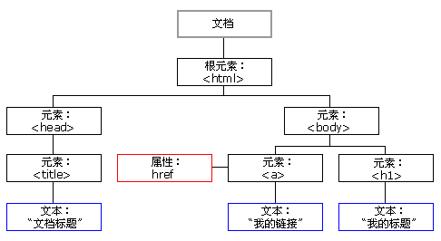

我的前端笔记之理解 html 篇
之前也多多少少接触过一点前端，但每次都会触及一些细枝末节，像 html 的某个元素啦，或是某个 css 的具体意思了，再或者是写一点 javascript 啦之类的内容。但总是感觉对前端缺乏一种比较顶层的认识。
虽然偶尔也会听说一些关于网页三剑客的比喻。类似 html 是网页的骨骼，负责网页的骨架部分；css 是网页的皮肤，负责网页的外观部分；javascript 则是网页的肌肉，给网页上的交互提供动力。不过这种说法似乎又太过于宽泛了，难以让人形成具体的认识。
所以本文试着整理一种介于上述比喻，以及底层细节之间的一些内容。通过分别叙述 html，css，javascript 的核心角色，试着能不能找到那种高屋建瓴的感觉。
首先辨析一下前端两个概念：「排版」和「布局」
参考知乎的两个回答：排版和布局是两个不同的东西和布局和排版是有差异的
「布局」指的是宏观 GUI 的划分，比如你有多个大块的东西，想要按照指定方式排布。
「排版」指的是，比如你有一些段落，段落中有不同的字体，不同字号，按照不同基线对齐、折行、断词，并且合理处理溢出的部分。
从网页说起
网页是现实生活中各种信息载体的网络聚合版
网页，是前端最直接的展示部分。它的目的在于「展示信息」，其他的一切活动都是为展示信息服务的。网页和其他的展示信息的载体，并没有什么本质的差别。想象一下我们日常生活中常见的信息载体：一个 word 文档，一份 PDF，一份调查问卷，一份财务报表等等。而网页就是这些信息载体的网络聚合版本。
人类在关注网页时，人类在关注什么
就像我们对待生活中的那些信息载体以及其所附带的信息那样，我们也会以类似的态度对待网页：首先关注的是文档本身展示出的内容，如果这些内容展示的格式非常漂亮，那可能会让我们阅读时更愉快，也更愿意去阅读更多的内容，另外，如果这些信息载体要是再多一些互动就更容易吸引人了。
也就是说，人类在关注网页时，仍然是：内容->样式，交互 的顺序，当然在网页越来越丰富多彩的今天，样式和交互也越来越被看重，甚至已经和内容一样重要的程度了。
而内容，对应着 html；样式和交互，则由 css 和 javascript 共同决定
html——带语义的文档流
网页的「两种语义」
当然网页作为信息载体和日常生活中的实体还是有区别的。虽然网页上的信息最终受众是人类，但它要通过浏览器，搜索引擎，或是一些其他能够处理网页的程序来实现这一功能。这也就形成了网页的两种语义：
第一种语义是最终展示出来的语义，由人类来理解，也就是平时理解的语义。
第二种语义是由浏览器，搜索引擎等机器程序可理解，属于「机器可读的语义」
最终呈现出的语义，是由人类的知识结构来决定的，人类会将页面上不同的内容，理解成为「标题」，「内容」， 「脚注」， 「导航」等具有特定语义的元素。也正是因为这个原因，有些 html 元素，生来就带有一定的样式，比如 h1~h6 这些标题，字号会比较大，同时也会加粗。这是符合人类的常识的，也与最终要展示的语义贴合，因此这样的设定会非常方便。
而第二种语义，也就是机器可读的语义，从上面的意义上说，是为第一种语义服务的。浏览器，搜索引擎等程序会识别 html 代码中的语义元素，然后加上样式等最终展示出来。语义化越强的 html，越方便于机器去理解。在软件领域，语义化往往是建立在合理的「结构化」之上的，所谓「结构化」指的就是不同语义部分的内容，采用不同的结构加以区分，而 html 中的结构化，其实就是使用各类 html 标签完成的。
让第一种语义更友好的展示，是网页的整体目标。这需要设计师，信息架构师，程序员的通力合作。
让第二种语义更好的服务于第一种语义，是程序员的本质工作。
为什么第二种语义是重要的
有一个非常合适的例子可以说明第二种语义的重要性。不知道你在使用智能手机的时候有没有遇到过这样的情况：
有时候需要在某个网站上输入东西时，会弹出输入法。但是不同的输入框，弹出的输入法的界面又有所不同，当你输入邮箱时，会弹出带@符号的键盘，当你需要输入密码时，弹出的是全键盘等等。而且更奇怪的时，这个功能有时候灵，有时候不灵。这个功能好用的时候，你会感觉输入内容时非常顺畅，不灵时，你就要手动切换输入法的不同的界面，找到你需要的符号。感觉就非常不爽。
这背后就是第二种语义在起作用：在 html 中，输入框有很多不同的类型，有的是 email，有的是 password，有的是 text。如果一个网站很好的对这些语义做了区分，并且应用在了他们的 html 中。那么上述的输入法弹窗表现的就会很智能。因为机器可以根据 html 中不同的语义来选择弹出什么样的界面。如果是 emai，就弹出带@符号的界面，如果是密码，就弹出全键盘等等。但是如果语义化做的不好的网站，就做不到这一点，只会统一弹出通用界面，需要人类去判断，切换。
这个例子是要说明，在浏览器等软件越来越智能化的今天，html 的语义化也变得越来越重要。
上面也提到，浏览器一般会给一些特定的 html 元素以特定的样式，但是这只是因为这样做比较符合人类尝试，能够提供便利性。千万不要因为想要某个样式去使用元素，而是应该给要标记的内容选择最合适语义的元素。至于样式，则应该交由 css 去处理。『html 只关注语义，不关注布局，也不关注样式或交互』，这样的总结，也是出于这个原因。
以 html 的语义来理解网页
上面说完语义的重要性，接着来看如何通过理解这些第二类语义元素来理解网页。这部分内容涉及的元素比较多，这里只是粗略说明一下。
首先网页有不少展示用的语义化元素用来展示信息。
像最基本的
<!--头部-->
<header></header>
<!--主体-->
<main></main>
<!--尾部-->
<footer></footer>
<!--段落-->
<p></p>
<!--章节-->
<section></section>
<!--独立片段-->
<artical></artical>
...以及更具体的：
<!--时间-->
<time></time>
<!--地址-->
<address></address>
...这些都是普通的语义化的来展示信息的元素。但是像现实生活那样，信息展示还有其他的方式，有助于人类更好的阅读和理解。比如：
列表
它分条分类的列出比较核心的信息，可以让人更快的理解清楚一件事物的各方面重点。html 中嵌入式的元素
如图片，所谓一图胜千言。
再如音乐，视频等等
另外，现实生活中，我们常会遇到通过分发纸质的表单，用来收集信息。还有报表，用来清楚的展示分门分类的比较格式化的信息。这在 html 中也有相应的语义元素，分别是：
- 表单（form）
- 表格（table）
他们的作用也和现实生活中的大同小异，而且 html 中的表单有多种多样的类型，单选框，复选框，输入框（输入框本身也有更细的语义化的类型）。这和现实中的多种多样的调查表单都是相似的。
另外，html 中还多了一些独特的语义元素。比如：
<!--链接，可能是最重要的独特元素，它把各个页面通过网络组合了起来-->
<a></a>
<!--其他一些元素，这些元素或描述了网页关系，或是描述网页信息等等-->
<link>
<meta>基本的 html 元素，就是上述这些种类，可以看到，这些元素组合起来，即有收集信息的部分，又有展示信息的部分，而且为了更好的展示信息，html 又提供了许多语义化的元素。
这些元素组合在一起，一起形成了网页的全部语义信息，几乎可以实现和模仿现实中的所有信息载体，某些方面犹有胜之。
文档流
除了前面所说的一些元素会根据常识带有一些样式外（如果说这算排版样式的话），html 还有一种简单的默认的布局方式（姑且这叫布局样式）：也就是从上到下，从左至右依次排列元素。用更形象的说法是，这叫 html 文档流。
这种默认的文档流，给 html 提供了符合常识的，也是最基础的布局，不至于说所有元素都乱糟糟的堆在一起。但还是强调那句话，虽然浏览器给 html 提供了一些默认的样式和布局，但这都是基于人类直觉和常识的：『html 只关注语义，不关注布局，也不关注样式或交互』
DOM
DOM 全称为 Document Object Module，也即文档对象模型。来看 W3.org 上的解释
什么是 Document Object Model?
The Document Object Model is a platform- and language-neutral interface that will allow programs and scripts to dynamically access and update the content, structure and style of documents. The document can be further processed and the results of that processing can be incorporated back into the presented page.
文档对象模型是「平台和语言无关的接口」，允许程序或脚本来动态地获得和更新文档的内容，结构以及样式等。这样，文档就可以以后再被处理（further processed），而且处理的结果反过来合并入目前的页面上。
Why the Document Object Model?
“Dynamic HTML” is a term used by some vendors to describe the combination of HTML, style sheets and scripts that allows documents to be animated. The W3C has received several submissions from members companies on the way in which the object model of HTML documents should be exposed to scripts. These submissions do not propose any new HTML tags or style sheet technology. The W3C DOM Activity is working hard to make sure interoperable and scripting-language neutral solutions are agreed upon.
“动态 html”是一些厂商描述 HTML，style sheet（样式表）和 scripts（脚本）结合起来实现文档动态化的说法。W3C 已经收到了来自一些团体组织的 submission，描述了 HTML 文档对象模型应该以何种方式暴露给 scripts。这些 submission 不建议任何新的 HTML 标签和样式表技术。W3C 组织的 DOM 运动累成狗，就是为了尽量协调多方需求以及形成平台和语言中立的解决方案。
上面两段在说啥？
也就是说，DOM 呢，是文档对象模型，它不是属于某个具体语言的标准库啥的，它是一种与语言和平台无关的模型。其他语言想要操作 HTML 文档（其实不仅是 HTML，还有 XML 等一些结构化语言）呢，就必须按照这个对象模型设计自己的操作方式。
推出 DOM 这个东西的原因就是原来有一批人在撕逼，你有你的想法，我有我的思路。W3C 为了一统武林，就提出了 DOM，并且不断的规范它，这样对大家都好。
DOM 本身是挺复杂的东西，但是我们平常所用的 DOM，只用了解到它的大致模样，以及知道如何操作就算入门了。我们平常说的 DOM，其实就是一种 HTML 的树形结构：

通过上图中的树形结构，可以使用其他实现了 DOM 操作的语言，如 javascript 等，按照一定的规则来操作这些节点。而这棵 DOM 树本身也定义了一些继承的概念，用于更方便的控制其中的节点。
小结
以上基本上就是 html 核心的全部了，用几个词来总结一下就是：语义，基于常识的元素默认样式，文档流，以及 DOM。

人存于世，因缘际会
我是兴华，很高兴见到你